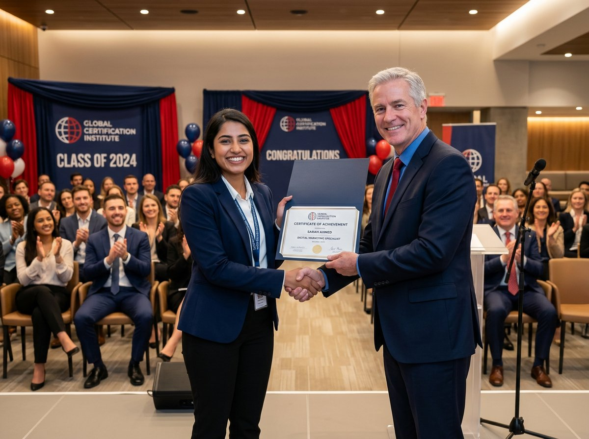

12 nouveaux formateurs certifiés
La session de certification de septembre s'est achevée avec 100 % de réussite. Retour sur trois jours d'apprentissage collectif et sur ce que cela change pour nos clients.

Trois jours, douze formateurs, un seul objectif : garantir la même qualité d'animation sur l'ensemble du réseau BBI.
Un parcours exigeant
La certification BBI repose sur trois piliers : la maîtrise du contenu pédagogique, la posture d'animation et l'évaluation continue des acquis. Chaque candidat a animé une séquence filmée en conditions réelles, puis reçu un retour structuré de ses pairs.
« On ne certifie pas un savoir, on certifie une capacité à le transmettre. »
Cette promotion affiche 100 % de réussite au premier passage — un niveau jamais atteint depuis la création du parcours.
Et maintenant ?
Douze nouvelles signatures de qualité pour les prochains trimestres, et une prochaine cohorte annoncée pour février. Les candidatures internes sont ouvertes dans l'espace formateurs.